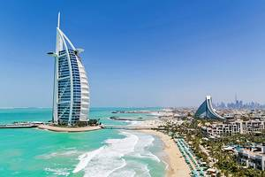
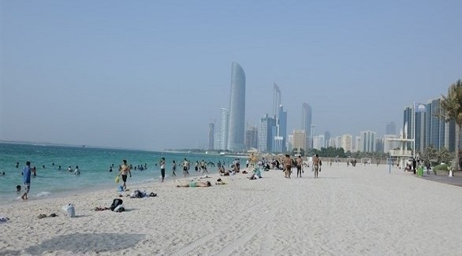
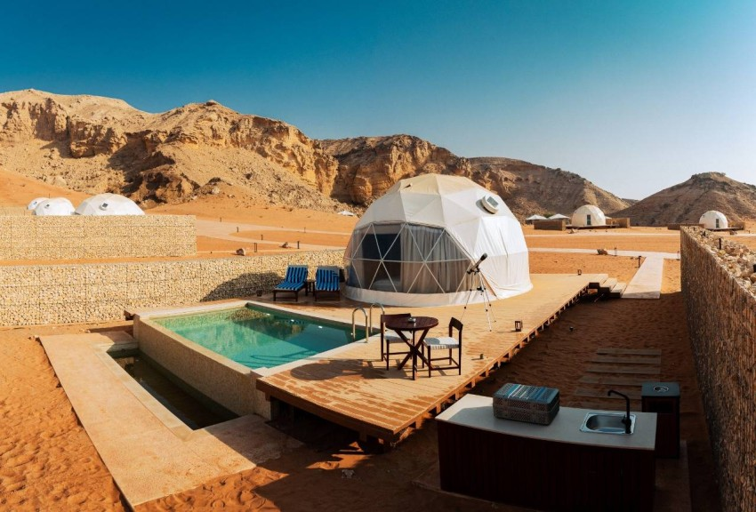

Burj khalifa is the highest building in Dubai and is the longest building in the world at 829.8
meters and most famous in the city. For most visitors, the journey to the 124th floor control
platform is a must when you are in the city. Views across the city skyline of this great amazing
edifice simply. The surveillance platform experience includes a multimedia presentation in Dubai
and Burj Khalifa (which has been completed in 2010), before the super-speed elevator lifts you
to the monitoring platform for those 360 degrees, crossing the skyscrapers to the desert On
one side and the ocean on the other. Night visits are particularly popular with photographers
because of Panorama's famous city lights in Dubai. Buy a Tower Khalifa entry ticket "at the top"
in advance to avoid long rows, especially if you plan to visit the weekend and enjoy the charm of
the best tourist places in Dubai
2) Sheikh Zayed Grand Mosque
Sheikh Zayed Grand Mosque
Clad in white marble, the beautiful and absolutely mammoth Sheikh Zayed Grand Mosque is Abu Dhabi's landmark building and by far the most popular sightseeing attraction in the city.
The mosque fuses Mameluke, Ottoman, and Fatimid design elements to create a harmonious and thoroughly modern mosque that celebrates Islamic architecture.
Artisans used glasswork, mosaic tiling, and intricate carvings to spectacular effect on both the interior and exterior.
It was opened in 2007 after nearly 20 years of construction. Able to hold 40,000 worshippers, it is the biggest mosque in the United Arab Emirates, and like the Sheikh Zayed Mosque in Fujairah (the UAE's second biggest mosque), it is dedicated to the late Sheikh Zayed bin Sultan al-Nahyan.
Non-Muslims are allowed into all areas of the mosque (including the vast library), and the mosque runs regular free guided tours
The Abu Dhabi City Tour is a good way to get acquainted with the city. This five-hour tour visits the Sheikh Zayed Mosque and the Etihad Tower observation deck with a guide. Transport and hotel pickup and drop-off are included.
Address: Al Khaleej al Arabi Street, Abu Dhabi
Official site : Sheikh Zayed Grand Mosque
3) Admire the Global Culture & Art Collection at the Louvre Abu Dhabi
Admire the Global Culture & Art Collection at the Louvre Abu Dhabi The Middle East's most spectacular museum, Louvre Abu Dhabi traces the entire history of humanity's artistic achievements, from the Neolithic right up to the current day.
The wealth and diversity of art on display, from ancient Egyptian statuary to famous paintings by Picasso, is mind-boggling, while the museum's contemporary architecture, with its galleries gathered under a vast silver dome, is a reason to visit in itself.
As well as the permanent collection, which runs over 12 galleries, several major temporary exhibitions are staged each year.
The Louvre is the first of three planned major museums to open on Saadiyat Island, which is set to become the cultural heartbeat of Abu Dhabi in the coming years.
The other two – Guggenheim Abu Dhabi and Zayed National Museum – are still in the planning phases.
Official site : the Global Culture & Art Collection
4) Thrill Seek at Ferrari World
Thrill Seek at Ferrari World This branded theme park brings the thrill of Formula One racing to Abu Dhabi and is one of the city's top things to do for adrenaline seekers and families alike.
Small children can test out newly learned driving skills on the Junior GT track, while speed junkies can buckle up and ride the Flying Aces roller coaster, which clocks up speeds of 120 kilometers per hour on a 52-meter loop (the tallest in the world).
There's also a collection of Ferrari's cars, with models dating back to 1947, and a Ferrari factory tour and Ferrari knowledge game show for true car nerds.
Address: Yas Leisure Drive, Yas Island
Official site : Ferrari World
5) Burj Al Arab

Burj Al Arab The Burj Al Arab Hotel is one of the finest and most luxurious hotels in the world
and features its charming views in the Jumeirah tourism area, designed to suspend the sail at
321 meters dominated by Dubai, the world's longest hotel, one of the symbols The most famous
city, so that the trip to Dubai will not be completed without seeing it, and Burj al-Arab is one of
the world's most recent architectural designs as the world's most interesting hotel and the most
interesting spaces in Dubai. Establishment on an artificial island Hundred meters from the sea
beach.
6) Dubai Fountains
Dubai Fountains The fountains are designed at the world's largest tower, which defines the
dancer fountains of 30 acres from the Lake Burj Khalifa Synthetic, which shoots water to 500
feet, equivalent to a rise of 50 floors, At night, the bright beam of the bright light is hugging the
sky, which visitors can see 20 miles, and therefore is one of the brightest spots in the Middle
East, and perhaps in the whole world. The visit of the city of Dubai is not completed only to see
these amazing and exotic fountains and is one of the most important places of tourism in Dubai
7) Dubai Creek
Dubai Creek Dubai Creek is one of the most important places of tourism in Dubai as he is a
sea-like tongue that divides Dubai City to its basic naughty Deira and Bur Dubai. It is about 15
km long. And in a natural port of Arab vessels. The real heart of the city is considered. The Dubai
Museum and Tired Disability of Gold markets, spices and fabrics are embraced. When you are
in Creek, do not miss the traditional boat ride on a trip across a UAE for a single AED. It is the
cheapest tourist teacher and the best value at all
8) Palm Jumeirah
Palm Jumeirah Palm Jumeirah is one of the largest industrial islands in the world, which is
designed in the form of an entry from the trunk, crown and 17 and surrounded by a semi-circular
barrier. Tourism for tourism in Dubai and find everything you want from the beginning of
international hotels, amazing tourist attractions, luxury fashion, wonderful shopping malls, spa,
swimming pools and beautiful beaches. All are just housing and villas, While the marine barrier
area is witnessing 7 huge hotels and giant resorts.
9) Dubai Opera
Dubai Opera Dubai Opera is a dazzling cultural radiation center. Dubai Opera is located in
the new Opera area in the heart of Dubai and offers a florious schedule that can be reproduced
by Westend and Broadway Theater in Manhattan. The remarkable building overlooks the Dubai
fountain and is next to Burj Khalifa, and is inspired by the form of al-Huda. While the back of the
building is grew up like a bodie. The theater area is designed to be easily converted to three
different platforms by events: theater, celebration hall or concerts
10) City Wok
City Wok City Walk is designed by the best designers in the world and includes distinctive offers
on global fashion, and the finest restaurants, modern housing and luxury hotels, to cross City
Walk on the passion of Dubai Dubai Innovation. City Walk has an area of 13 thousand square
meters, The pedestrian areas in Europe are similar to a wonderful hiking and car-free space
and are considered one of the most important places of tourism in Dubai. You can hiking along
the streets surrounded by trees, shops and restaurants. There are also fountains, children's
playgrounds and many outdoor seats. In City Walk Dubai surrounds you creativity, to refund the
inspiration in each of which is visiting this distinctive destination
11) Al-Fahidi Historical neighborhood
Al-Fahidi Historical neighborhood Al-Fahidi Historical neighborhood One of the oldest
neighborhoods in Dubai, see there is a traditional lifestyle, which was prevalent in Dubai since
the mid-1970s, where buildings - with prolonged pragmat, and motion Traditional building
materials of coral stone, plaster, teak, behavior, and trolls and trunks automatically separated
by the alleys, jackets and public squares, which gives the neighborhood naturally aesthetically
versatile. The neighborhood has played a strategic position on Dubai Creek - an important role
in Dubai administration and organizes its transboundary trade relations, and the neighborhood
is still nearby for the Office of the Ruler of Dubai. Your visit to Al Fahidi Historical is a valuable
opportunity to identify the heritage social lifestyle - which was prevalent in Dubai - with a
rich valuable inventory that displays and distributing neighborhood buildings. As visitors to
participate in Arabic, heritage tours and visits to the mosque accompanied by two local culture
assessed. After the exploration, the desperate boat and go in an amazing tour to markets on the
other side of the Creek
12) Dubai Water Channel
Dubai Water Channel Dubai Water Channel One of Dubai Tourism Places in Dubai provides
you with a wonderful marine journey to stretch Dubai Water Channel at a distance of 3.2 km
from Al Khor in the Old Dubai towards the commercial bay before they pour in the Arabian Gulf.
Dubai Water Channel is one of the most important projects of Dubai The channel is added to
6 kilometers to the waterfront of the Emirate of Dioteware project more than 80,000 square
meters, dedicated to public places and vital facilities will be provided with many outstanding
amenities, which meet visitors' aspirations and meet the requirements of all groups of society.
The project also includes a shopping center, shopping, new entertainment facilities, including a
bridge, and more than 450 new restaurants are added in the project vicinity, which also contains
a group of boards for yachts and boats, and four international hotels.
13) Brawwaz Dubai
Brawwaz Dubai DUB (Dubai) in Zabeel in the Emirate of Dubai is one of the landmarks of
Dubai, which is achieved in 2015, with 150 meters up and up to 93 meters targeted from the
Emirate of Dubai present and the past together in an art A huge most important new projects in
Dubai and soon became a tourist teacher meaning many visitors and residents. This magnificent
architectural teacher at Zabeel Park is located in a central and modern Dubai, which can visit
the city in a new and different way, and indicates his name, Dubai Brozer is designed to be as a
framework that collects heritage and talking partitions to Dubai And innovative
14) Dubai Museum
Dubai Museum The history of the Dubai Museum of Fahidi is due to 1787, which is the oldest
based in the city so far. This museum, which was opened in 1971, contains two interviews on
an interesting journey through which Islamic schools. The markets in the 1950s, as well as
seeing traditional craftsmen during their work. Old Arabian houses, mosques, dates and land
and marine life are also depicted. It also displays diving scenes to extract pearls. In addition
to displaying groups of weights, scales and sieves of pearl traders. It can also be seen from
valuable local collections through multiple drilling and exploration operations that return to the
third millennium BC
15) The village of Heritage and diving
The village of Heritage and diving This museum is located in Al-Khor al-Khor, and served
by guides, disbursements, hatches and other craftsmen, controlled by Dubai Maritime and
photographed the living conditions of indigenous sailors who traveled periods Long in Gulf
water in search of pearl for trade. The museum presents a graph and with the history of pearl
trade in Dubai, and there is a village of tents giving a glimpse of Bedouin's life, which remained
until the twentieth century
16) The Union Museum in Dubai
The Union Museum in Dubai The Union Museum and preserves and presents the heritage of the
United Arab Emirates in the areas of social, political, cultural, scientific and military. The museum
takes its visitors to the establishment of the United Arab Emirates and is one of the best
Museums of Dubai. The museum is located in Jumeirah and features a range of interactive areas
that allow visitors to discover the history of the United Arab Emirates. The museum highlights
the evolution of the UAE and specifically between 1968 and 1974 through images, movies and
many more. In addition, visitors can view the heritage of the United Arab Emirates before signing
the founding parents on the treaty, which has united the seven Emirates. Therefore, this museum
is the perfect place to discover the details of the economic development, which has been known
since its independence as the first federal state in the Arab world. The Union Museum is also
equipped with a library, an educational center, a showroom and a restaurant
17) The Shindagh Museum
The Shindagh Museum The Shindagha Museum is one of the most wonderful Dubai
museums on an exploratory journey to Dubai's exceptional past and its original heritage, by
showing images and videos showing the stages of the development of Dubai from a primitive
area based on fishing and navigation, to a thriving city Fully technology. You can visit the perfume
department in the museum to see the manufacturing routes of perfume. The museum also
provides a section for children to identify the old games and the way they play. Location: Near
Dubai Creek, Shindagha area, Bur Dubai.
18) The Beach at GPR
The Beach at GPR The Beach is located opposite the JPR Jumeirah Walk, and has a wonderful
set of cafés serving juices and meals, as well as shops that include the finest brands. Do
not miss the visit of Dubai Aqua Park inflatable water, water sports, pancakes and other fun
activities can be reached easily for families. It also offers an elegant Arab atmosphere with
modern touches. The Beach features a wide range of restaurants, shops, entertainment centers
and water games. In addition, children can enjoy train and spend room. You can also ride the
camel on the beach while the picturesque city views. In addition, there is a 600-meter walkway,
an outdoor gym and a volleyball court on the beach in addition to the outdoor yoga ranks. There
are also many recreational offers that are held in total
19) Kate Beach
Kate Beach The Beach of Kate Beach brings together waves and aquatic sports in one
place. Kate Beach Beach is one of the best free Dubai water beaches. The water sports, ski and
kayaking equipment will find near the beach. Test your skills and reduce wind and high waves.
You can also participate in the volleyball game on the beach and learn new friends. Besides all
these adventures, you can also spend times filled with calm and relaxation in this distinctive
beach destination. Do you like walking or jogging? Kate Beach, which extends is 14 km away.
This place also gives you the finest views of the Arabs.
20) Jumeirah Beach
Jumeirah Beach Jumeirah's beach or white sand beach is named to its location in the
Jumeirah area in Dubai, on the Gulf coast. It extends along the southern coast of the historic
area of the city until Palm Jumeirah and ends between the southern end of Jumeirah Beach
Residences (next to the Dubai Marina region) and port facilities in Jebel Ali. The beach facade
is suitable for shopping complexes, luxurious hotels and resorts, including Borg El Arab Hotel,
Wadi Water Park, Jumeirah Beach Hotel and Jumaws. The places of services distributed by the
beach provide equipment for water activities, such as water skiing, paramedicals, and small
boat rental to make a pleasant marine trip. Jumeirah Beach is one of the best beaches of Dubai
tourism.
21) Mamzar Park
Mamzar Park Mamzar Park is one of the vast beach gardens and its unique location on
golden beach sands, where you multiple areas, recreational and recreational sites that embrace
the magnificent garden. Mamzar Park, one of the most beautiful gardens in Dubai and one
greater one, has enjoyed a strategic location within the residential residential area for rent in
Mamzar, and on the border between the Emirate of Dubai and Sharjah as well as its extension on
the Gulf beach Surrounded by its water from three aspects. Mamzar Park includes a senior and
young swimming pool, and rooms for clothing, shower, and initial ambulance clinics, as well as
about 30 dedicated barbecue areas, and do not forget to be included 15 kokha some large and
the other small and their prices range 150 - AED 200. Working hours: Sunday - Wednesday: 8:00
am - 10:00 pm, the weekend: 8:00 am - 11:00 pm on Monday and Wednesday for ladies only
(male for sixth time only) Lost price: AED 5 for adults, free access to people with special needs
and children Without the two years
22)Flower Park in Dubai
Flower Park in Dubai Flower Park in Dubai or as is called Dubai Miraculous Park. The south
of Al Barsha is located and sports the Arabian Ranches and Dubai Sports City. This garden
includes about 45 million kinds of flowers that are grown for the first time in the UAE, which are
overturned by various types of perfumes. The Roses Park in Dubai also consists of small and
several other landmarks, all of which are made of flowers, but are not limited to the UAE, but
not limited to the world, such as Al-Ahram, which rises 10 meters from the surface of the earth
Which led to the entry of this park in the Guinness Encyclopedia, and other stuff of things also
from aircraft and cars. Dates of Flower Park in Dubai: Sunday - Monday - Wednesday: From 9:00
am - 9:00 pm, Either Saturday - Tuesday - Thursday from 9:00 am - 11:00 pm Login Fees Flowers
in Dubai: AED 40 for adults, for children (3-12 years) Emirati, free entry for children under three
years
23) Mall of the Emirates in Dubai
Mall of the Emirates in Dubai Mall of the Emirates is a shopping center in Al Barsha in
Dubai, UAE. The mall has a 14-screen cinema, gaming, a range of diverse stores, and a large
theater, as well as an internal ski slope in the Middle East, Dubai ski. The Mall also includes
Dubai Community Theater, Arts Center, and Magical Plant, which is one of the largest family
entertainment centers in Dubai., Which made it better than Dubai
24) Mirkato Mall Dubai
Mirkato Mall Dubai Mirkato Shopping Mall is a shopping center in Jumeirah in Dubai,
the commercial center is designed to look like a Mediterranean City during the European
Renaissance in Italy. The Center opened in 2002, at a cost of AED 120 million. To enjoy a
convenient shopping experience, he headed to this ancient Italian-style mall, where the roads
are portrayed, and beautiful squares. The mall includes 130 stores, and is easily mobilized and
charming. Shop from the most famous shops such as "Armani Jeans", Diesel, and Massiamo
Doti; Enjoy natural light emitted from the glass ceiling. The local residents love shopping at
Spinnez Supermarket, and the Fox Cinema House, and an entertainment city for children is
available. Enjoy a cup of coffee and some dessert in one of the closed cafes deployed in the mall
or lunch at a restaurant, such as the famous Chic Shack restaurant. This mall is at Jumeirah at
night, with spicy and ideal road lights to enjoy a lovely time with those who love
25) The World of Adventure
The World of Adventure The world of IMG is a closed park in the world. Philoseraptor, longer
and faster a bettle train in Dubai, which is pushing 100 km / h within 2.5 seconds only. There are
four areas suitable for all ages, and the heroes lovers can be addressed to the world of Marvels
such as Avengers. Children can enjoy their time in the Cartoon Network area where personal
figures are available between 10, Borbuff girls. IMG visits a world of adventures from Sunday
until Thursday from 11:00 to 21:00. Friday and Saturday from 1:00 pm until 23:00. AMG Dubai
tickets prices for AED 245 either for young people 225 AED
26) Sky Dubai
Sky Dubai Ski Dubai The first snowy resort in the Middle East provides its ominyering and
offers its services for young, adults, and beginners in snowboarding and found these sports
throughout the year and not in the winter and offers the resort For guests winter clothes,
snowboarding and ski equipment that fit all ages. It is part of the Emirates Mall, which is one of
the largest shopping malls in the world. Sky Dubai is the largest inner ski city in the area and has
five ski routes, sliding ropes, penguin birds, sliding paths, slides and alpine coffee shop where
you can eat a cup of hot cocoa to heat yourself. You can only visit the place to play only snow, or
taking a lesson in the ski for an additional charge, in place, you will feel much fun when it boasts
snow experience in Dubai
27) Dubai Water Park
Dubai Water Park Also located at the Dubai Shopping Center, here, you can explore the water
experience in the Marine Zoo, where you can watch the strongest reptiles and most of them in
nature at all, the crocodile king is now one of the largest crocodiles in the world, and is expected
to Grow to become greater over the next 50 years. The Dubai Water Park is also the largest
outstanding water basins with 10 million liters and hits thousands of marine animals, located
within 140 of the living organisms, more than 300 sharks and lips fish and also includes the
largest group of tiger sharks Sands
28) Wild Wadi Water Park
Wild Wadi Water Park Wild Wadi is a water park located near the distinctive tag in the city,
Burj Al Arab, one of Dubai's water parks and you can go to Wild Wadi for wild and exciting tours,
where they are available Jumeirah sliding vehicles launched at 80 km / h, the hurricanes of the
valley of anger and others. When visiting it, you can enjoy a swimming pool, many water slides
and water disbursement, for a total of 17 water districts in the garden. The garden contains the
largest and faster water slide in the world (after the United States of America) with an increase
of 33 meters and 80 km per hour. The garden also has a 18-meter waterfall, which is run every
10 minutes. There are also two gifts, three restaurants and a snack bar. A 30 game of ride
games as well as suitable attractions for the whole family. We would like to note that guests
less than 1.1 meters will not be able to play all ride games in a water garden garden. The guest
length is measured when the entrance is measured and if it is found to be more than 1.1 meters,
he is asked to pay a full regular entry ticket. The garden is one of the most beautiful landmarks in
Dubai
29) Legoland Water Park
Legoland Water Park Lego Land and Legoland Water Park are located in Dubai Parks &
Resorts, and are ideal for all family members, especially for children between the ages of 2 and
12. Most tours and water slides available at Legoland for young children allow their racing or
ride in groups. Dopplo Splash offers a great experience for young people, while the water slides
offer older children pleasure and suspense. Children can also stimulate their minds with the
activity of "Warpa", where they can build any kind of small boats they imagine and put them in the
water to test their ability to resist water current.
30) Corniche Abu Dhabi
Corniche Abu Dhabi Abu Dhabi Corniche is the first tourist side and the best tourist
attractions in Abu Dhabi, which is an end to the city's residents. The Corniche extends at 8 km,
with many restaurants, cafes and pedestrian corridors And other bicycles, playgrounds for
children and many, and is a distinctive swimming place where swimming is allowed 40 meters
from the beach, making it one of the most important tourist places in Abu Dhabi Emirates, and a
destination for all families from within and outside the city and everyone Abu Dhabi tourists are
not completed by visiting the maritime corniche rich in various services for all ages
31) Yas Formula
Yas Formula Is a circuit of the most sophisticated major cars races in the world, they are
inspired by the heritage and values of the United Arab Emirates. The Yas Island of Abu Dhabi,
and this ring was saw in 2009 the first race of the Formula Award for Formula, and extends 5.55
kilometers, and is divided into two different tracks, where the length of the world was 3.1 km.
The second is 2.4 km. Its work is not limited to two cycling races, but on the ground that is a
different sports events, where covered classes can accommodate for fifty thousand viewers.
The Yas Marina is the most important recreational facility at the United Arab Emirates, where
the world's attention is attracted annually and is the best tourism in Abu Dhabi. The circuit is
embracing many sports events and events associated with professional cars such as cycling
races, Yas Marina also is also preferred to establish many events, recreational and community
events and conferences. And official meetings of modern equipment and facilities.
32) Abu Dhabi Tower
Abu Dhabi Tower It is a very slanted skyscraper in the engineering and architectural creativity
located in the Emirate of Abu Dhabi near the National Exhibition Center in Abu Dhabi. The tower
is 160 meters high (520 feet) and the tower is 35 floors, one of the longest buildings in Abu
Dhabi and the tower is stunning at an angle of 18 degrees to the West, which is four times the
famous Pisa tower. It is designed by Romjm (Robert Matthew Johnson Marshall) and implement
Al Habtoor Contracting Co., King of the Abu Dhabi International Exhibition Center (ADEC), the
largest conference and exhibition center in the Middle East. Diagrid technology, which absorbs
tremors during violent earthquakes and is one of the best places of the visit to the tourism in
Abu Dhabi
33) Palace of the fort
Palace of the fort Palace of the fort in Abu Dhabi considers a historic tourism, important
to all tourism dating back to the 17th century, the historical building is a former house for the
family of Nahyan. The visitor can be made before entering, watching the palace from abroad
and how to build a molded architecture, consisting of a large fort and a surveillance tower, and
the fortress also includes two circular towers and others. On the ground, an exhibition is held
permanently and shows how the UAE over the past decades of fishing craft to sophisticated
and modern emirates. You can join the show from 9:00 am to 8:00 am free of charge. Popular
shopping in Abu Dhabi.
34) Abu Dhabi Zoo
Abu Dhabi Zoo Abu Dhabi Zoo is one of the most beautiful spaces of tourism in the UAE and
highlighted its importance as a senior animal in the region as well as a distinctive entertainment
park for family and family, making it a destination for about half a million visitors Annually
from all over the world, they are considered an entertainment in Abu Dhabi, the most beautiful
and most famous. The Abu Dhabi Zoo features its charming African atmosphere, which is of
approximately 1700 different animals and has been established if they learned, including rare
animal factions such as white tigers, Siberian tin and other Amazing species.
35) Al Ain Pradis Park
Al Ain Pradis Park Al Ain Pradis Park is one of the most beautiful landmarks in Abu Dhabi,
one of the most beautiful gardens in Abu Dhabi and one record two digits at the Guinness Book
of International Numbers so that they contain the world's largest chains. The place is perfect for
families, nature and plants, especially the words that are spread everywhere in the garden from
all forms, kindness, colors and sizes until rare. One of the things that gives more beauty on Al
Ain Park is a small Eiffel Tower, which is 12 meters high, and is a modern lighting system, and a
95-meter water waterfall and a 250 cm rise in water, while the entrance is The garden is a glossy
bracket with a rise of 7.5 meters.
36) Al Ain Oasis
Al Ain Oasis One of the most wonderful Abu Dhabi parks, Al Ain is located in Al Ain City
Center in Abu Dhabi, a few steps from the city museum in the city specifically in the southeast
region. This charming place from the tourist areas of Abu Dhabi is on the UNESCO World
Regulation as a recognized global heritage site, Oasis contains a number of archaeological sites
and irrigation systems that worked for hundreds of years and even our time. The place also
features a number of other services such as free parking, as well as a number of restaurants,
which offer meals, arabic and apostasia, and specialized cafes in the delivery of refreshing ice
cream and a number of hot and cold drinks
37) Yas and Trworld
Yas and Trworld Yas Waterworld is another fantastic city in Abu Dhabi and there is a
10-minute drive from Abu Dhabi International Airport, 30 minutes from the center of Abu Dhabi,
90 minutes from Dubai International Airport. In Yas Waterworld you will find an amazing range of
aquatic games that are among the best and most exciting and versatility in the world, including
Bandit Bomber, aquatic and oppressive, water slide. Where you can compete with other racers
from Yas Waterworld visitors, super-long water slides and multi-curvings. There is also a water
defender area and the water war area where children can spend a wonderful time in playing
with water weapons, there is also a fun castle and the comfort of the comfort and both of the
families and children in Yas Waterworld.
38) Eye of Marina Abu Dhabi
Eye of Marina Abu Dhabi It is a huge rotary wheel and has an important strategic location
controlled by one of my favorite shopping malls in the capital (Marina Mall) and includes cabins
that accommodate each cabins of 8 people from different ages and an eye Marina Abu Dhabi
on 42 cabins, including VIP capsule equipped with the latest equipment and each cabins are
air-conditioned and covered with glass from all areas to allow you to enjoy stunning city views
and a wireless connection system and alarm system Panic. It is one of the best recreational
parks in Abu Dhabi, where the wheel gives you great views of the surrounding area of the
island of Marina, where the 196-year-old Ain Marina journey (60 m) is about five minutes, which
will receive four full courses spinning Quickly very quickly, each moment in these minutes is
an opportunity to enjoy unparalleled views of Abu Dhabi, Corniche and the view of the most
beautiful Emirates Palace
39) Abu Dhabi Water Amusement Park
Abu Dhabi Water Amusement Park Abu Dhabi Water Amusement Park is the largest water
park in the Middle East, where friends and families can enjoy a sexy range of tours. The main
idea of Abu Dhabi Water Park is based on the legend that represents culture And UAE local
heritage.
40) Avenue Union Towers
Avenue Union Towers A luxury destination for shopping in the Federation Towers project
in Abu Dhabi, the largest mall in Abu Dhabi, featuring a number of union towers and 43 new
international brands, some open for the first time such as Hermes and Colli and Tom Ford,
Latest fashion and jewelry accessories and watches to satisfy all tastes and desires from both
men and women, along with the number of famous unions' restaurants towers such as the
French Fochon and Algisto and many more. Abu Dhabi also has a lot of special shopping places
worth visiting during the Abu Dhabi tourism, you can see a comprehensive article on the best
Mall of Abu Dhabi.
41) Abu Dhabi Beach

Abu Dhabi Beach One of the most important and honesty of the capital. On the extension of
Abu Dhabi's history, the beach was the forum where people meet to spend the most beautiful
times, whether on yellow sand or in warm water, and beach is along Abu Dhabi Corniche. The
chance of visitors and tourists are unique in this place over the week, where his sinners are
crowned at the weekend, with a gone with them an exquisite plate of thousands of people who
came to enjoy swimming and sports Sometimes read. The Abu Dhabi Beach, a "blue flag", an
internationally known environmental quality certificate, gives the beaches and anchors that
guarantee the cleanliness and safety of swimming water. The beach is available for non-depleted
barriers away in water, and they are constantly helping to help people in any case Emergency
during swimming
42) Al-Bateen Beach
Al-Bateen Beach Al Bateen Beach in the capital Abu Dhabi, which is almost 391 meters, is
one of the black and recreation fingerprint, with Mamsha for running and walking sports, along
with its highest facilities SOA, entertainment and health. The project consists of three main
zones: Ladies Beach, Open Beach, Walk, and the development of this beach is vital to the new
facilities of the beach with major water attractions and new commercial items from restaurants,
residents and retail in accordance with a commercial area of up to 6062 square meters. This
beach accepts a large number of Abu Dhabi suburbs and visitors wishing to get out of the heart
of the capital for relaxation, comfort and not thinking except in the landscape of the Budaha,
which is drawing water in their thrombosis with the picturesque beach.
43) Zayed Center
Zayed Center Zayed National Museum is located in Al Bateen, the National Museum of the
United Arab Emirates. The museum is reviewed by the Founder of His Highness Sheikh Zayed
bin Sultan Al Nahyan (May Allah's mercy) and the Emirates Union. The museum is divided into a
number of traditional buildings, and has an old-fashioned car on each entrance. Once entered
the Museum, you will notice dedicated rooms for Abu Dhabi and Emirates and Abu Dhabi Police
History and Abu Dhabi Wild Petroleum Operations Company. It also has many historical postage
stamps in the Emirates Postcard. The police chamber include many weapons and old radios
owned by police in the past. The museum also includes a room for the Precious Officer, which
includes its cars and gifts received throughout his life
44) The Louvre Museum of Abu Dhabi
The Louvre Museum of Abu Dhabi The Louvre Museum of Abu Dhabi is a technical museum
built in Abu Dhabi, the capital of the United Arab Emirates. The French architect Jean-Nofal
designed, the Louvre Museum of Abu Dhabi is located in the Saadiyat Cultural area, and is an
area of more than 9,200 square meters. It was designed to embrace various art pieces from
all civilizations and cultures that arose since the dawn of history and until our time. That's like:
Italian gold from the fifth century BC, paintings of Magrat, Gogan, Mona, Picasso, and many
more. The architect is inspired by Jean Novell's design of water tables that are taking place
across the museum of the traditional flogge of irrigation. This museum is one of the most
important museums of Abu Dhabi that deserves visit. The museum is famous for being a replica
of the Louvre Museum in France, and its mortality for many specialized works. In addition to
offers that are organized to increase cultural and history among people. It is also one of the
most immediate area where the region is already famous for its distinctive design and beautiful
architectural architecture.
45) The Maritime Museum in Abu Dhabi
The Maritime Museum in Abu Dhabi The Maritime Museum in Abu Dhabi is one of the
most important museums of Abu Dhabi as he celebrates the UAE's marine heritage and the
relationship of the UAE people in the sea and fishing throughout the ages and is one of the most
important places of tourism in Abu Dhabi. Aqueous Museum Abu Dhabi Sirwi has the heritage
of the UAE, the heritage of the UAE and the market of maritime navigation and will discover the
relationship between the UAE over the times and will be charged with creative designs. The
Museum asserts visitors that the Arabian Gulf is one of the most distinctive elements in the
museum. He is a great place in the lives of the UAE in the old and has made boats and diving to
collect pain and fish to win their arms The Abu Dhabi Museum building, designed by Japanese
architect Tadao and Lozo, is elegant, taking a wind with a wind with an internal spaces of the
Museum and appears to be like a gate on a wide waterway to bring two main elements, And the
sea.
46) Dubai Butterfly Garden
Dubai Butterfly Garden have more than 15,000 butterflies and located within a miracle garden,
with an area of 2600 square meters divided over nine spouses designed. Enjoy the evolution of
these wonderful insects, from the life of Yarqana to form their frozen to complete its growth.
This is a great trip that will become a family member. Do not miss the visit of butterflies and
insects on site, which will provide you with an in-depth analysis and information on these
amazing species. Do not forget your children to this environmental masterpiece when tourism in
Dubai.
47) Ras Al Khor Wildlife Sanctuary
Ras Al Khor Wildlife Sanctuary
In the marshes, a few meters from the crowd and the noise in the city, will find the head of the
Creek head of wildlife. It is difficult to believe that you will find tens of thousands of birds in
an easy-to-access place. This protected is a fertile land for many types and the true country
of criminals, mammals and fish; But the flaming birds are the stars in the winter. Take a closer
look and find these masses from the pink feathers, the presence of gray sad owner, great
heron, crowned Heron, stomach, white moods, wooden cocks, punishment and many other
birds. The Municipality of Ras Al Khor is closely protected by Dubai Municipality, which has shut
down. However, there are three for birds within the surrounding of the Haram, which are open
to the public during business hours. These shelters are the first step in a continuous project to
develop an information zone and awareness of visitors around local wildlife and the Ram al-Khor
protector is one of the most beautiful natural places to visit in Dubai. Address: Ras Al Khor Road,
Ras Al Khor, Dubai
48) Dubai Aquarium
Dubai Aquarium
Do not miss the opportunity to visit DP giant and an Andwater animals park, which includes
33,000 water animals, including the largest clan of bull in a 10 million liters. Located on the
third floor of Dubai Mall, Aquarium features 140 nautical and offers great ways to explore the
underwater world as well as the most famous entertainment places in Dubai. Walk around 48
meters tunnel and enjoy the charm of the strange world in the depths of the ocean. Enjoy fish
and sharks that walk around you. The aquarium also provides bottom transparent and make-up
boats to convert micro-princesses to sea mermaids and diving opportunity in cage and even
swimming with sharks
49) Aquaventure Waterpark
Aquaventure Waterpark
The Akavanther Park is one of the most exciting water parks in Dubai. In 2013, more improved
with the opening of four new Topogan tunnels, tangled around the Poseidon tower, in addition
to one of the largest cable transport system lines in the Middle East. Among the preferred
attractions, the Lip off-feather slider is waiting for a 27.5-meter diving through Tobogan tunnel
surrounded by sharks. Although some tunnels are not allowed for children less than 1.20 meters,
but younger children can go to the Splashes Stadium: and is a maze of entertainment, dubbas
and climbing units! It is actually an excellent family destination when tourism in Dubai.
50) Sheikh Saeed Al Maktoum
Sheikh Saeed Al Maktoum was the governor of Dubai from 1921 to 1958 and is very for the
current ruler. His previous house was rebuilt and restored as a museum, which is a great
example of the Arab architecture. The original home was built in 1896 by the father of Sheikh
Saeed, so he can monitor shipping activity of balconies. It was demolished, but the current
home was rebuilt next to the original website, with the original form by integrating carved teak
doors, wooden lattice networks across windows, gypsum ventilation screens with vegetarian
and engineering. Thirty rooms have been built around a central courtyard with the wind tower
at the top. The Dubai Photo Museum and Historical Documentation, with many old images are
brilliant to Dubai from 1948 and 1953 and are the best tourist places to learn the old city history.
The maritime suite has pictures on fishing, pearl fishing, and boat construction. Throughout the
building, there are many characters, maps, metal currencies and stamps displayed to display the
emirate development. Nearby place Najd Beit Sheikh Obaid bin Thani, which was restored and
provided by traditional internal performances
51) The Moon Inn

The Moon Inn The Moon Inn offers an unforgettable experience on simplicity, adventurous
spirit and discovering in the atmosphere of privacy and practical hopes, and gives them the
opportunity to discover fossil rocks by day, and enjoy the skies filled at night
52) Geological garden
Geological garden The geological garden includes normal features and dating miles and
features unique designs in their tracks through which they can learn how the most prominent
geological landmarks in the region, such as a series The stone mountains, other individual
mountains, porcelain plains, and sand dunes. The garden includes two archaeological sites
contributing to the promotion of the history of human settlement for this region, which is due
to more than 125,000 years. Once the geological geography is entered, visitors can check rock
and local excavations. This destination is characterized by a slope causes a central axis, display
areas and external path connecting capsules.
53) Crimea protected
Crimea protected The Crimea is one of the most unique environmental sites versatile in the UAE,
which consists of land and freely features and have a great diversity of plants and animals.
54) The island of light
The island of light light in Sharjah, located in the city center in Lake Khaled, is the best tourist
place in Sharjah y a rest rather than shopping or exploring the many museums In the city.
The island is also a great place for nature lovers, with sporadic gardens with a stylish and natural
character and quiet. One of the most important places can be visited on the island is the house
of butterflies, that is the nice place that contains about 500 different types of butterflies that
you can see and explore. The island is also considered a suitable place for families and children,
to detect nature and inshave some of the fresh air and spend a fun time with all. Visitors can
also explore many other areas, one of the most important Nour cafe, which is located within the
butterflies, toys, and many other green areas and other places. It is also an appropriate place
to go at night, where many and beautiful lighting makes it an appropriate place to sit in periods
tonight too
55) Sharjah Museum of Islamic Civilization
Sharjah Museum of Islamic Civilization The optimal place for us as Muslims to learn about
our culture and our history, it is the right place where many things about the history of Muslims
are generally concerned. The museum has many things to explore, for example, many scientific
and religious manuscripts, and there is a group of Islamic arts and craft dating back to the
seventh century until the 19th century. There are also exhibitions for porcelain, glass and others,
and handmade work exhibits containing gold, silver, copper and others. In the museum also
things come back to the history of Umayyad Caliphat, as well as the Abbasid Caliphat, including
metal currencies such as golden janners and silver. The museum contains seven permanent
exhibitions, as follows: Islamic art lounges 1 - 2 - 3 - 4 and the lounge of Ibn al-Haytham and the
galaxy for temporary exhibitions and the exhibition of Meskots
56) Malihah Antiques Center
Malihah Antiques Center is located in the south-eastern part of the Emirate of Abu Dhabi. A
tourist place is amazed with monuments and historical monuments to identify the history of the
Arabian Peninsula until the pre-Islam and return to the Bronze Age. Visitors in the Malihah area
can visit Malihah, which has been built since two thousand years, as well as an ancient maleh
cemetery or as called as a cemetery or fire, which is estimated at a thousand and 300 years
old. As for Melihah Antiquities Center, falls next to the mausoleum or fire. And a melihah center
in general and as we mentioned historical information on the past moratorium on the Arab
Peninsula and contains ancient effects due to thousands of years, which can be fully explored
and visited on your trip with a matter of understanding of the area! You can also rent a 4-wheel
drive via sand dunes as well as a beauty ride. In the evening, tours are held to watch stars in the
sky and before they can sit and relax to watch the sunset in that area. Then you can learn some
things about astronomy with the help of experts with custom telescopes
57) The mosque of light
The mosque of light Mosque of light is a great mosque in Sharjah, overlooking Lake Khaled,
and an area of about 25,000 square kilometers and was opened in 2005. The mosque is
important to be important in the Emirate of Sharjah and return to be a major mosque and
design Building a luxurious, built on someone's ancient Ottoman designs of mosques and this
is clear from the form of domes in the mosque. The length of the mosque in the mosque is up
to more than 50 meters. The mosque can accommodate more than 2,000 chapels, as well as a
dedicated section for women, which can accommodate about 400 sermons. Inside can note of
a luxury of the mosque and many decorations and decorations, as well as tours and definition of
Islamic civilization and some UAE heritage
58) Khorfakkan
Khorfakkan Khor was one of the coastal cities located in the Emirate of Sharjah and 120 km
east of Sharjah. The city is one of the most important tourist attractions in Sharjah because of
its beautiful coast and many mountains. From the activities you can do during your trip is to go
for beaches, swimming or diving practice, and you can visit Khorfakan Port, which is one of the
most important tourist attractions in the city. The visitors can also make many other activities as
a shark island, the Dibba Island, anonym and others. Here we mention a funny information if the
city name is strange to you, the reason for the name of the city with this name is the presence of
two mountains tip out, and these mountain in the form of decomposition so he called Fakhr.
59) he park garden
he park garden is located in the center of Lake Khaled, a distinctive garden in Sharjah offers
a different experience for both young and old. In case you want to take the family or go with
your friends for a place filled with entertaining this place may be appropriate for you. The garden
design is fantastic, full of various facilities, and two basic garden is the island of legenders and
the kingdom of pearls. The kingdom of pearls, for example, offers a distinct water experience,
as it has a water city with a large number of water slides and events. It also accommodates
for seven thousand visitors. As for the island of myths, there are many games and events for
children, for example, you can try both Baz train, the viking, and proximity, and challenge the
dragon, time and many more too many
60) Qasba
Qasba from distinctive places in Sharjah, and a quiet perfect destination. Al Qasba is located
next to Al Qasba Water Channel, and is an ideal hiking destination for families in the evening.
There are a large number of restaurants and areas there. On both sides of the watergar and
enjoy nature next to the water, and many facilities for children and games are also available. You
can also ride the boat, starting from the canal down to Lake Khaled, a simple mild trip to enjoy a
view of Sharjah lit at night.
61) Kalba containing
Kalba containing the area on a number of places worth your visit, including the Beit Saeed
bin Hamad Al Qasimi House, Kalba Castle, Corniche and Corniche Park, and the trees and others.
The Crimean tree reserve in Kalba is a mangrove and is one of the most beautiful reserves in
the UAE. The Crimea is threatened with extinction in many places from the Arabian Peninsula.
There is also a Kalba for birds center, which is a senior tourist teacher in Kalba, a very granular
place for bird lovers. It includes a large number of birds and provides them with an appropriate
environment as a protector to live and know many The types of birds closely and close


 - Copy.jpg)